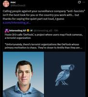

0

0


A lawsuit from 26 Meta employees alleges the company used AI-driven scoring and monitoring systems to select workers for layoffs, disproportionately targeting employees with disabilities or those who had taken protected medical, family, pregnancy, or parental leave. "Meta did not assemble the termination list through the considered judgment of managers who knew the work. Instead, Meta used a constellation of internal artificial-intelligence systems -- including a system referred to internally as 'Metamate,' employee-trained 'second-brain' agents, keystroke- and activity-monitoring data, AI-token-usage dashboards, and algorithmically assisted performance ranking and calibration -- to score, rank, and select employees for inclusion on the list," the lawsuit (PDF) said. Ars Technica reports: Employees were allegedly graded, among other things, on how much they used Meta's AI tools. "Meta's internal dashboards classified employees by their stage of adoption of its artificial-intelligence tools, using categories such as 'AI Native,' 'AI First,' and 'AI Enabled,'" the lawsuit said. The lawsuit is apparently "the first against a major U.S. company to challenge the alleged use of AI in conducting layoffs," according to Reuters. The complaint alleges that Meta's tools for monitoring employees did not account for differences caused by disabilities and protected leaves. "Those tools draw on inputs -- performance ratings, calibration scores, productivity and output metrics, 'AI-native' ratings, and AI-token consumption -- that, by design, cannot be accumulated by an employee who is on protected medical or family leave, or whose output is reduced by a disability," the lawsuit said.
The lawsuit alleged that Meta management did not take steps to adjust scores for employees who took leave or who requested reasonable accommodations for disabilities. "Meta did not neutralize those inputs for protected leave; did not exclude protected-leave-takers or accommodation-seekers from the selection cohort; and did not pause the system for the individualized, leave- and accommodation-neutral review that the law requires," the complaint alleged. "The result was that employees who took protected leaves were disproportionately selected for layoff, based on scoring that not only failed to account for their protected leaves, but in effect penalized the employees for exercising their legal rights to these leaves." The 26 plaintiffs requested leaves or disability accommodations in the 24 months before being selected for layoffs, the lawsuit said. The layoffs are not yet finalized, but employees are scheduled to start losing their jobs on July 22, the lawsuit said. "These claims lack merit and are not based on facts," said Meta in a statement. "Workforce management and organizational decisions were and are made by people, not AI."
Read more of this story at Slashdot.
OnePlus will reportedly announce this week that it is shutting down its brand in the U.S. and Europe, following months of signs that parent company Oppo was winding down the brand's global presence. India and China are reportedly unaffected, but it's unclear whether Oppo will replace the brand directly in those markets. The move also raises questions about future support for existing OnePlus users. 9to5Google reports: WinFuture reports that OnePlus is gearing up for an official withdrawal from the U.S. and European markets, with the announcement due in the "coming days" this week. Closed-door press conferences have apparently happened, with no details shared on the exact reason OnePlus as a brand is shutting down in these markets. India and China are, as far as this report claims, not affected. The report, citing "well-informed sources," notes that this OnePlus announcement will come amid "fundamental changes" to Oppo's strategy, but the big point here is the global death of OnePlus.
Read more of this story at Slashdot.
IBM shares plunged after the company warned that Q2 revenue and earnings would miss expectations, blaming customers' sudden shift in spending toward AI hardware instead of software services. However, CEO Arvind Krishna did not place all the blame on IBM's customers. The CEO also said it "faltered" by failing to "anticipate the magnitude of the capex reprioritization."
"These conditions require our teams to execute perfectly, and this quarter we faltered. We did not adapt and move quickly enough, and numerous large deals failed to close on the timelines we expected, driving the majority of our shortfall." Fast Company reports: In the preliminary report, IBM said that for its second quarter of fiscal 2026, it expects revenue of $17.2 billion, which is up 1%. It also said it expects a Non-GAAP Diluted Earnings Per Share (EPS) of $2.93, up 5%. However, as noted by CNBC, these preliminary results are below what analysts were expecting, which was $17.86 billion in revenue, and an EPS of $3.01, according to FactSet data.
Read more of this story at Slashdot.
New York has become the first U.S. state to impose a moratorium on large new data centers, pausing construction for one year over concerns that AI-driven data center growth is raising utility bills, straining water supplies, and burdening communities. "As data center development threatens to hike up utility bills, deplete our natural resources, and create uncertainty for New Yorkers, it's my responsibility to take action and lead," said New York Governor Kathy Hochul. She will also pursue legislation to repeal sales tax exemptions for large data centers, Hochul added. Reuters reports: The construction ban will apply to data centers that use 50 megawatts or more of power, officials in the governor's office said. During the moratorium, the state's Department of Environmental Conservation will not issue any discretionary permits not already deemed complete, the governor's office said. Instead, Hochul directed state officials to develop a Generic Environmental Impact Statement to ensure that new data centers coming online are held to "consistent standards," as well as examine the potential environmental impacts of the construction and operation of data centers in the state. The ban will be lifted once the state finalizes those standards, according to Hochul's office.
Read more of this story at Slashdot.
Scientists at the Indian Institute of Technology, Madras (IIT-M) have created what they describe as the world's most detailed 3D cellular atlas of the human brainstem, linking whole-brain MRI views to individual neurons across more than 500 tissue sections. The free online atlas, called Anchor, could help researchers better understand diseases such as Alzheimer's, Parkinson's, stroke, and SIDS by showing how healthy and diseased brain tissue differs cell by cell. The BBC reports: Built from high-resolution microscope images rather than costlier molecular techniques, it creates a detailed three-dimensional map of the brainstem, identifying more than 200 clusters of brain cells and nerve pathways. Eight chemical markers help distinguish different cell types, producing one of the clearest pictures yet of this vital, but poorly, understood part of the brain. The brainstem occupies only a sliver of the brain, yet it keeps people alive. It links the brain to the spinal cord and controls breathing, heartbeat, sleep, wakefulness and movement.
[...] Users can zoom from the whole brainstem seen on MRI down to individual neurons while maintaining their precise spatial relationships. The researchers have made the atlas freely available online, hoping it becomes a reference tool for neuroscientists, neurologists and neurosurgeons worldwide. Its applications could also extend well beyond anatomy. By comparing healthy brainstem maps with diseased tissue, scientists may better understand disorders ranging from Parkinson's disease and stroke to Alzheimer's disease and sudden infant death syndrome (SIDS). More precise maps could also help neurosurgeons navigate one of the brain's most delicate regions with greater confidence.
Read more of this story at Slashdot.
Astronomers have detected erythrulose, a sugar found in raspberries and self-tanners, in a gas cloud near the center of the Milky Way. While not essential for life itself, the molecule can convert into a form thought to be important for life's origins, adding evidence that key prebiotic ingredients may be widespread across the galaxy. The Associated Press reports: Using two dish-shaped radio telescopes in Spain, researchers collected data from a large gas cloud near the center of the Milky Way. They identified the sugar in gas form by comparing telescope signals to samples in the lab. It's the latest kind of sugar detected in space -- in a region crossed by NASA's twin Voyager, the farthest spacecraft to ever travel from Earth.
Scientists have found interesting chemistry in our galaxy, including building blocks for genetic material and parts of the cell. They spotted a cousin to table sugar near the center of the Milky Way about 25 years ago, and black grains from asteroid Bennu retrieved by NASA's Osiris-Rex spacecraft yielded other sugars, including a key DNA ingredient. The latest sugar isn't essential for life, but can easily convert to a form that's thought to be crucial to kick-starting life on Earth. And it's one of the most complex sugars spotted so far, said astrophysicist Erika Hamden with the University of Arizona. The results were published in the journal Nature Astronomy.
Read more of this story at Slashdot.
CISA and allied governments are warning users to secure their routers as Russian state-backed hackers continue compromising the devices and turning them into proxy nodes to disguise attacks against critical infrastructure. The advisory urges users to disable outdated SNMP versions, use strong passwords, update firmware, and turn off unnecessary router services to reduce the risk of being swept into these botnets. Ars Technica reports: "Russian Federal Security Service (FSB) Center 16 cyber actors continue to exploit poorly configured and vulnerable networking devices worldwide, opportunistically compromising multiple critical infrastructure sector networks," the Cybersecurity and Infrastructure Security Agency said Monday. The hacking groups are tracked under various names, including Berserk Bear, Energetic Bear, Crouching Yeti, Dragonfly, Ghost Blizzard, and Static Tundra. The advisory was co-issued by governments from around the world, including Australia, Denmark, New Zealand, and the UK.
The primary means of compromise the agency warned about was hackers scanning IP ranges with active Simple Network Management Protocol (SNMP) agents that accept common or default authentication credentials. These scans are run by the very sorts of router botnets the actors are trying to enroll the targeted device in. By sending malicious traffic from spoofed addresses, the hackers can use the SNMP agent on poorly configured routers to run malware. SNMP allows users to collect and organize information about managed networking devices or to modify that information to change device behavior.
With control of a device, the hackers then use it as an exit node when probing or attacking targets in the communications, defense, energy, financial services, and government sectors. By funneling the malicious traffic through a benign-appearing device on a trustworthy IP address, the attackers are able to lower the chances of getting blocked by firewalls and other security defenses. Monday's advisory made no mention of identical operations carried out in recent years by China. So-called residential proxies are also a go-to tool used by financially motivated criminal hackers to obscure their true IP address. In many cases, these sorts of proxies are made up of millions of streaming devices that are sold with preloaded malware.
Read more of this story at Slashdot.
German textile firm ZEGO has filed for insolvency and is blaming a March cyberattack that shut down production for nearly six weeks. "ZEGO's filing adds another name to the short but growing list of companies that say a digital break-in was commercially fatal to their business," reports The Register. From the report: In a notice to customers and suppliers, the organization said it had exhausted every available option before seeking insolvency protection. Managing director Johannes Zenglein described the filing as "one of the most difficult steps in our company's 37-year history." "The cyberattack of March 29, 2026, however, impacted our company to an extent that we could not fully compensate for despite our best efforts," Zenglein wrote. "The consequences resulted in a production outage of nearly six weeks and significant financial strain. These effects ultimately impacted our financial situation so severely that filing for insolvency became necessary."
ZEGO did not disclose what kind of attack it suffered, whether ransomware was involved, who was behind it, or whether customer or employee data was compromised. What it has made clear is that the operational disruption alone was enough to push the business beyond the point of recovery. ZEGO said insolvency proceedings have now been initiated, but insisted the filing does not necessarily spell the end of the business. It said it plans to keep production running while administrators attempt to restructure the business, preserve jobs, and keep customers and suppliers on board.
Read more of this story at Slashdot.
A coalition of 12 states led by California is suing to block the $111 billion Paramount Skydance-Warner Bros. merger, arguing it would reduce competition in theatrical distribution, blockbuster films, and basic cable licensing. The challenge (PDF) defies the DOJ's approval of the deal. Variety reports: The coalition, led by California Attorney General Rob Bonta, alleges that the $111 billion transaction violates the Clayton Act by lessening competition in three distinct markets: wide-release theatrical distribution, "top-grossing" theatrical distribution, and basic cable licensing. "The unlawful merger of these two entertainment behemoths would lead to higher prices, lower quality, and less content for film and television, harming movie theaters, basic cable distributors, and ultimately, audiences on every sofa and movie theater seat in the U.S.," Bonta said in a statement on Monday.
The suit argues that the combined company will control 27% of the wide-release theatrical distribution market, 30% of the submarket comprising "anticipated blockbuster films," and 27% of the basic cable bundle. The states argue that such consolidation will harm theaters and cable and satellite providers that rely on competition among distributors. Paramount and Warner Bros. are two of the five remaining legacy studios. Together, all five -- including Disney, Sony and Universal -- control 86% of theatrical distribution and 90% of blockbuster distribution, the states said. Warner Bros. and Paramount are also the second- and third-largest basic cable distributors, respectively.
[...] The states are expected to seek an injunction to block the transaction, which Paramount expects to close sometime after July 22. The 12 states in the coalition are Arizona, California, Colorado, Connecticut, Massachusetts, Minnesota, Nevada, New Jersey, New Mexico, New York, Oregon, and Washington. [...] All are represented by Democratic attorneys general. "Consolidation here not only leads to higher prices -- it also leads to fewer opportunities for important stories to come to life, and fewer ways for audiences to encounter stories, ideas, and perspectives beyond their own experiences," Bonta said. "In this country, no one is above the law. With this lawsuit, California and our sister states are fighting for free and fair markets, not rigged markets. America has no kings in government or our economy."
Read more of this story at Slashdot.
Google DeepMind chief Demis Hassabis is calling for a U.S.-led AI standards body to review frontier models for national security risks such as cybersecurity and biological threats. His proposal would create a federally overseen public-private organization, initially voluntary and eventually mandatory for U.S. deployment. CNBC reports: Google DeepMind boss Demis Hassabis, a Nobel laureate, said in an article posted on X on Tuesday that "urgent action" was needed to address risks associated with artificial general intelligence (AGI) -- the point at which AI matches or surpasses human intelligence. "We've already seen the challenges frontier models pose for cybersecurity, and other threats including nuclear and bio risks may soon emerge as capabilities continue to advance," he said.
[...] Hassabis said the U.S. was well positioned to lead in developing an AI framework "given its economic and technical standing." "It could establish a new Standards Body modelled on a federally overseen public-private partnership or self-regulatory organisation, much like the Financial Industry Regulatory Authority (FINRA), with a board that includes independent leading technical experts and open-source representatives," he added. FINRA regulates brokerage firms and exchange markets in the U.S.
The proposed body would need "substantial" funding "in order to attract world-class technical talent and provide the necessary compute resources for large-scale testing," Hassabis said. Funding would "likely" come from industry, he added. Frontier labs would initially voluntarily share models with the body for review up to 30 days before release, before becoming mandatory for deployment in the U.S. market after being shown to be "effective." "Specific agentic AI tests could look for attempts to bypass safety guardrails or signs of deception, and ensure best practices, such as digitally watermarking AI-generated images and generating human-readable output tokens to understand model reasoning," Hassabis said. Further reading: Over 200 Economists Say 'We Must Act Now' On AI's Economic Impact
Read more of this story at Slashdot.
Today, the Linux Foundation launched the x402 Foundation to standardize internet-native payments for AI agents, APIs, and applications, based on Coinbase's contributed x402 protocol. Backed by companies including AWS, American Express, Cloudflare, Google, Mastercard, Stripe, and Visa, the effort aims to make payments work directly over HTTP (assuming users are comfortable letting AI agents handle financial transactions).
"The whole idea is to give agents access to money and, through that financial independence, improve their set of capabilities to pretty much anything on the internet," Lincoln Murr, Coinbase's AI product lead, told CNBC last month when the company announced the protocol. "In the 2010s, every internet company dealt with the transition from desktop and web into a mobile environment. And now in the late 2020s, we're seeing the exact same thing happen where agents are going to be the new primary economic actors on the internet."
Read more of this story at Slashdot.
An anonymous reader quotes a report from the BBC: StubHub and its CEO, Eric Baker, have been hit with a proposed $5-million class-action lawsuit in the United States over the company's ties to large-scale scalpers -- connections reported by CBC News last week. The suit, filed Monday by New York ticket buyer Louis Sanquini, alleges deceptive practices and fraudulent misrepresentation over StubHub's promoting itself as a "marketplace for fans to buy and sell tickets." The online ticket resale giant has faced a storm of customer complaints after cancelling thousands of World Cup tickets. The company has repeatedly said it is simply a technology platform that does not buy, sell or possess tickets. However, CBC reported last week that Baker disclosed in recent filings with the U.S. Securities and Exchange Commission that he runs Andro Capital, a hedge fund that engages in large-scale resale of millions of dollars' worth of sports and concert tickets on the StubHub resale platform.
Sanquini filed the proposed class action in the Southern District of New York, arguing consumers were kept in the dark and that he believed StubHub was a "neutral" marketplace. Lead counsel Kevin Steinberg told CBC News in an emailed statement that "consumers deserve honesty and transparency." A CBC investigation found that the CEO of online ticket reseller StubHub owns and manages a hedge fund that scalps millions of dollars of its own tickets. "While what StubHub is alleged to have engaged in and perpetrated upon millions of patrons is unfathomable, this case is about transparency and consumer trust. If companies make representations to the public, consumers are entitled to expect that those representations are complete and accurate," he said.
The claim reads: "Defendants' failure to disclose this conflict of interest, while affirmatively marketing StubHub as a fan-to-fan marketplace, deceived Plaintiff and the Class and caused them to pay prices, and accept terms, they would not have accepted had the truth been known." Sanquini argues that had he known StubHub's CEO held a financial interest and that the company was helping finance professional resellers, he would never have used the resale site to buy tickets to see rock band Kiss in 2023 or to attend a New York Red Bulls-New York City FC Major League Soccer match in 2024.
Read more of this story at Slashdot.
An anonymous reader quotes a report from the Associated Press: Hundreds of economists say in an open letter that institutions "must act now" to address how artificial intelligence could transform the economy and could put many people out of work. The statement released Monday was signed by top economists, along with computer scientists and some executives at tech companies including Anthropic, Google and OpenAI.
"AI may become radically more powerful over the next 10 years," says the letter organized by Stanford University's digital economy lab. "This could drive an unprecedented transformation of our economy, larger than the Industrial Revolution, but unfolding over a vastly shorter time frame. It could bring risks, including large-scale job displacement, as well as opportunities such as major gains in living standards."
The letter, which has only four sentences, says leaders must "build the incentives, guardrails, and institutions needed to steer AI in a direction that complements humans and benefits society." The Stanford lab says the letter has so far been signed by more than 200 economists and AI researchers, including 16 winners of a Nobel Prize. "We must be intentional and make collective, democratic choices, rather than letting market forces play out and risking leaving most citizens behind," wrote computer scientist and AI pioneer Yoshua Bengio, who was also among the signatories. He said it "it is highly plausible that AI will drastically transform our economies."
Other signatories include Google CEO Eric Schmidt, LinkedIn cofounder Reid Hoffman, and Nobel laureates Joseph Stiglitz, Daron Acemonglu, and Simon Johnson.
Read more of this story at Slashdot.
Microsoft is overhauling Windows 11 search to prioritize local apps, files, and settings over web results while removing ads, promotions, MSN/Bing clutter, and other distractions. "You've have been asking for search that is faster, more relevant, and easier to use -- whether you're opening an app, finding a file, or changing a setting," Microsoft says in a new blog post. "Because the Windows Search Box is where many people start, we focused first on making results more dependable, easier to scan, and clearer before you click." Windows Central reports: The company is highlighting several key improvements, including clearer results that does a better job at showing why a search result is appearing when a query has been typed, alongside prioritizing local results before reaching out to the web.
Search is also getting better at handling things like typos, which should help surface the right results even when the user misspells an app or file. The search home pane will no longer show MSN or Bing content, and promotional content and ads will no longer appear in search results.
These upgrades are now rolling out to Windows Insiders in the Experimental Channel, and are expected to roll out to all Windows 11 users later this year. Insiders may not see the changes right away as they are rolling out in waves. The full list of changes can be found here.
Read more of this story at Slashdot.
According to the Wall Street Journal (paywalled), Apple agreed to use Intel's U.S. chipmaking plants after White House officials pressured Tim Cook during tariff-relief talks last summer. MacRumors reports: In August 2025, Apple CEO Tim Cook was in Washington to lobby the Trump administration to drop its proposed 100 percent tariff on semiconductor imports -- a levy that would have raised costs across Apple's product line. Apple reportedly secured an exemption after pledging to invest hundreds of billions of dollars in the U.S., although many of those investments were already planned. During the meetings, president Trump and commerce secretary Howard Lutnick are said to have urged Cook to use Intel's fabrication plants to make some of Apple's chips. The link between the tariff talks and the Apple-Intel deal had not been previously reported.
Almost a year later, Trump announced via his Truth Social platform that Apple would begin using Intel-made chips in some products. "We need to design and build our Chips right here in America," the president posted. The news sent Intel shares to record highs. According to a person familiar with the negotiations cited by the WSJ, Apple plans to have Intel make chips for both Mac laptops and iPhones. The report doesn't say which chips or in what volume, and Apple is expected to remain reliant on Taiwan Semiconductor Manufacturing Company, or TSMC, for the majority of its custom silicon.
Read more of this story at Slashdot.
Mark Gurman / Bloomberg : Sources: OpenAI's first device will be a moveable, screen-free smart speaker with a camera and sensors, meant to serve as a humanlike AI companion — OpenAI's much-anticipated push into consumer devices is slated to begin with a mobile, screen-free smart speaker designed to be a new type …
Lulu Yilun Chen / Bloomberg : Sources: DeepSeek has started planning for an IPO in China and may file as soon as this year, allowing it to debut in 2027 — Chinese AI pioneer DeepSeek has begun preparations for an initial public offering and may file as soon as this year, setting the stage for what could be a landmark debut for the country's technology industry.
Lucas Ropek / TechCrunch : Anthropic faces ridicule and criticism for an ad titled “There's hope in hard questions” that unsettled viewers with weird graveyard imagery and doomer-ist tone — Anthropic is known for its creative marketing, but the AI company may have been a little bit too creative when it conjured up its most recent advertisement.
Mark Gurman / Bloomberg : OpenAI says it is “not aware of any evidence” that Apple's lawsuit alleging trade-secret theft has merit, adding that it believes in fair competition — OpenAI said on Tuesday that it's “not aware of any evidence” that an Apple Inc. lawsuit alleging trade-secret theft has merit.
Alex Konrad / Upstarts Media : Adapter, which offers an infrastructure layer to help users leverage and control data for use by AI agents and apps, emerges from stealth with $17.8M in funding — Repeat founder Adam Ghetti returns with a startup backed by GV and others to provide better ‘cognition’ for your AI use …
Amanda Silberling / TechCrunch : Overtone, a “voice- and audio-forward” dating service founded by Hinge creator Justin McLeod that uses AI to make “highly curated introductions”, raised $18M — Hinge founder Justin McLeod announced an $18 million fundraise for his new dating company, Overtone.
Diana Novak Jones / Reuters : A US judge dismisses a proposed class action accusing Apple of failing to stop the dissemination of CSAM through iCloud, saying Section 230 shields the company — A U.S. judge has dismissed a proposed class action accusing Apple (AAPL.O) of failing to stop the dissemination …
MacKenzie Sigalos / CNBC : PrismML launches Bonsai 27B, a model based on Qwen3.6 27B that it says runs natively on Apple devices via MLX; its CEO says Apple is evaluating the tech — Apple is in talks with a small Silicon Valley company that says it can shrink powerful artificial intelligence models enough to run directly …
Washington Post : A look at Founders Fund-backed State Affairs, which raised $70M and uses AI trained on reporting by its 76 staffers to power a Bloomberg Terminal-like product — State Affairs combines media and technology at a time when tensions between the two industries are at a fever pitch. — Summary
Samantha Subin / CNBC : TerraFirma, a construction tech company founded by two former SpaceX engineers to build remote-controlled construction equipment, raised $115M — As SpaceX's Elon Musk sells investors on a space economy with life beyond Earth, a two-year-old construction startup founded …
Bloomberg : Sources: Uber is in advanced talks to acquire Delivery Hero in a deal valuing the German food-delivery company well above its recent market value of €11.2B — Uber Technologies Inc. is in advanced talks to buy German food-delivery company Delivery Hero SE, a deal that will allow …
Aisha Malik / TechCrunch : Google Images launches a Pinterest-like redesign with a browsable, dynamic gallery of images, and adds a way for users to create AI images in Search — Google Images, the tech giant's image search engine, is taking on Pinterest with its latest redesign that turns the site into a browsable …
Politico : The European Commission proposes exempting wearable tech from rules requiring removable batteries, clearing a hurdle for Meta's smart glasses, after US pressure — Commission exempts smart glasses like Meta's from batteries regulation, clearing a major hurdle to European expansion.
Zac Hall / 9to5Mac : Anthropic announces a new Claude for Teachers initiative, as part of which it will provide K-12 teachers in the US free access to premium Claude features — Anthropic is providing free access to premium Claude AI features to K-12 teachers in the United States. The effort is part of a new Claude for Teachers initiative.
Reuters : Sources: data center operator Switch has hired investment banks for a US IPO that could raise up to $10B and value it at $80B, set for as soon as Q4 — Data center operator Switch is preparing for a significant initial public offering. This offering could potentially raise up to ten billion dollars soon.